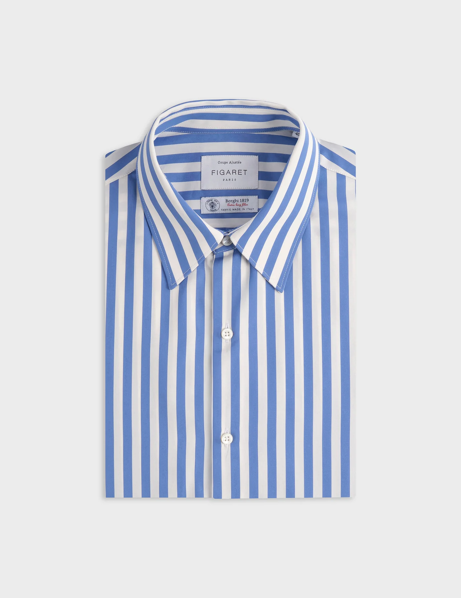
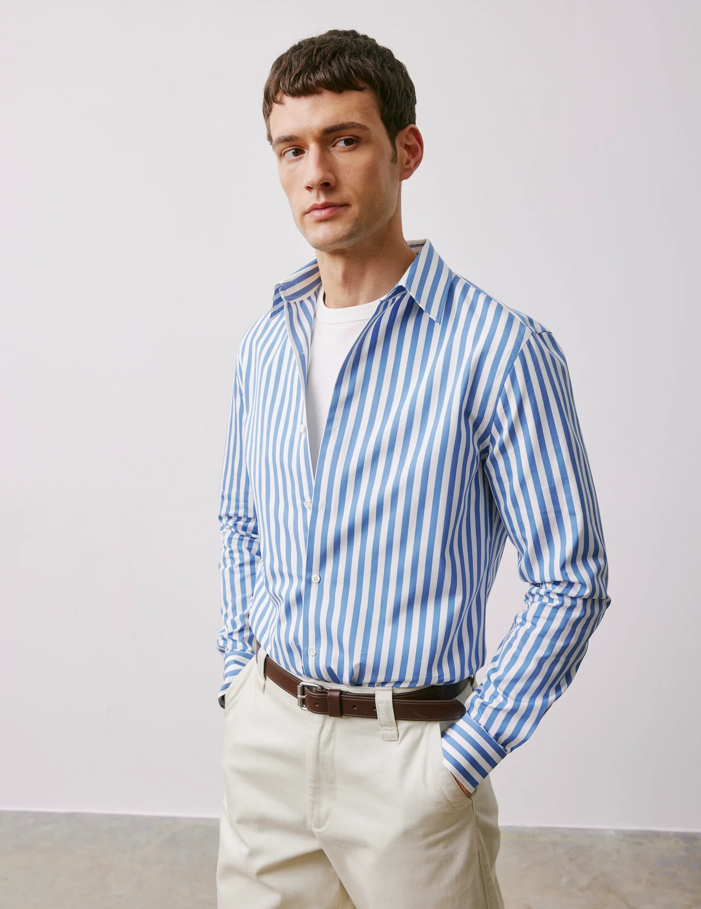
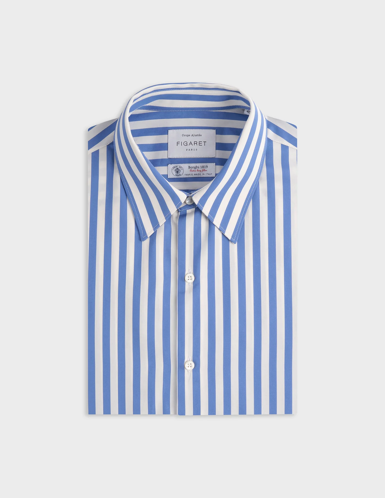
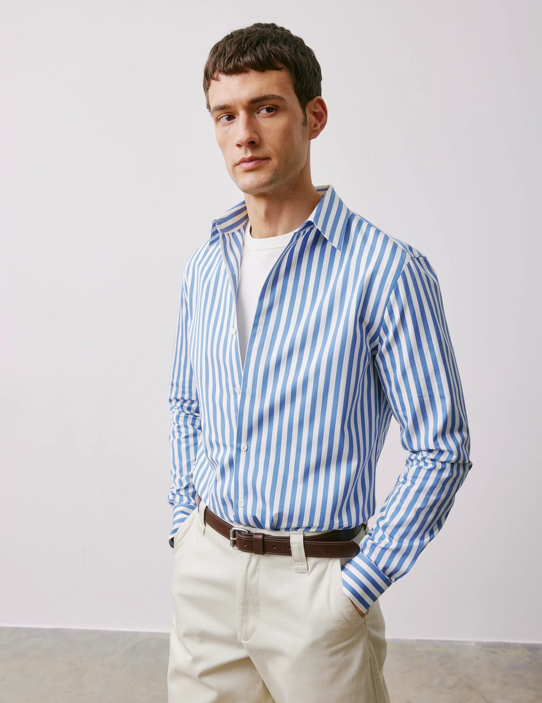

Matière / composition
Matière naturelle d’origine végétale.
Au vu du test de combustion (combustion très rapide, odeur de cheveux/papier brûlé, absence de fusion), la fibre est majoritairement du coton. Le tissu ne comporte pas d'elasthanne.
Fil
- Composition du fil : coton
- Type de fil : fil simple (non retors), filé de manière régulière
- Aspect du fil : lisse, fin à moyen, sans effet fantaisie
- Fil de chaîne et de trame : fils de couleurs différentes (bleu, blanc) disposés selon un principe de tissé-teint
Construction textile
- Textile chaine et trame
- Structure : tissu tissé-teint à rayures
- Les rayures sont obtenues par alternance de fils de chaîne de couleurs différentes, et non par impression.
Armure
Armure toile (1/1)
Chaque fil de trame passe alternativement dessus et dessous chaque fil de chaîne.
Ennoblissement couleur
- Procédé : teinture en fil (tissé-teint)
- Les fils sont teints avant le tissage, ce qui donne une bonne tenue des couleurs et des rayures nettes visibles à l’endroit comme à l’envers
Ennoblissement d’apprêt
Apprêt léger de type :
- apprêt adoucissant
- apprêt de stabilisation (anti-retrait)
Poids
Poids estimé : léger à moyen, environ 110 à 150 g/m².
Produit fini
Tissu adapté pour une chemise.
Exemple de produit : chemise homme figaret rayée
Voir produit

 


